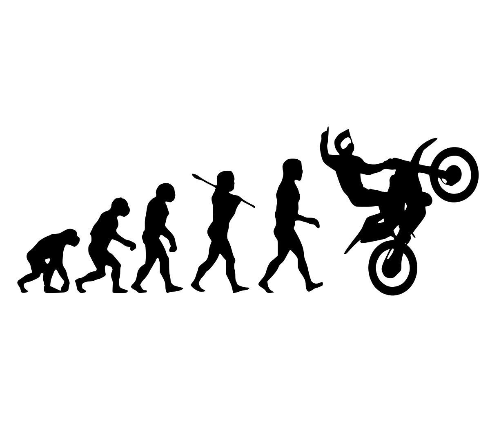
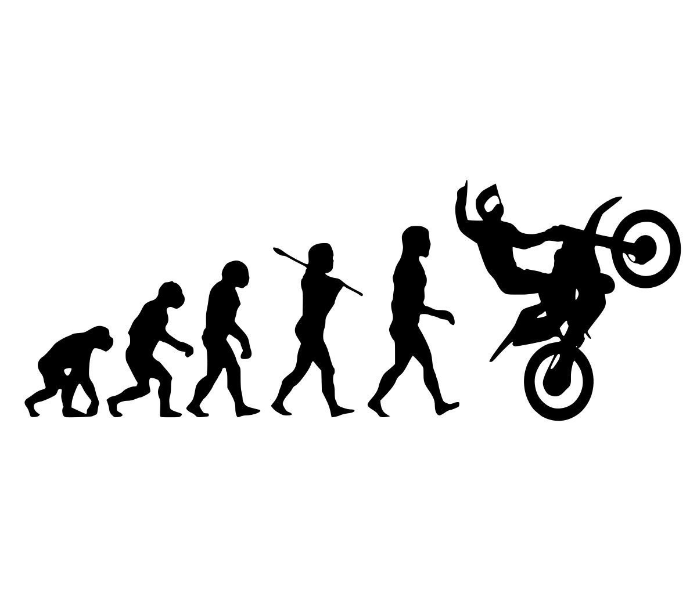
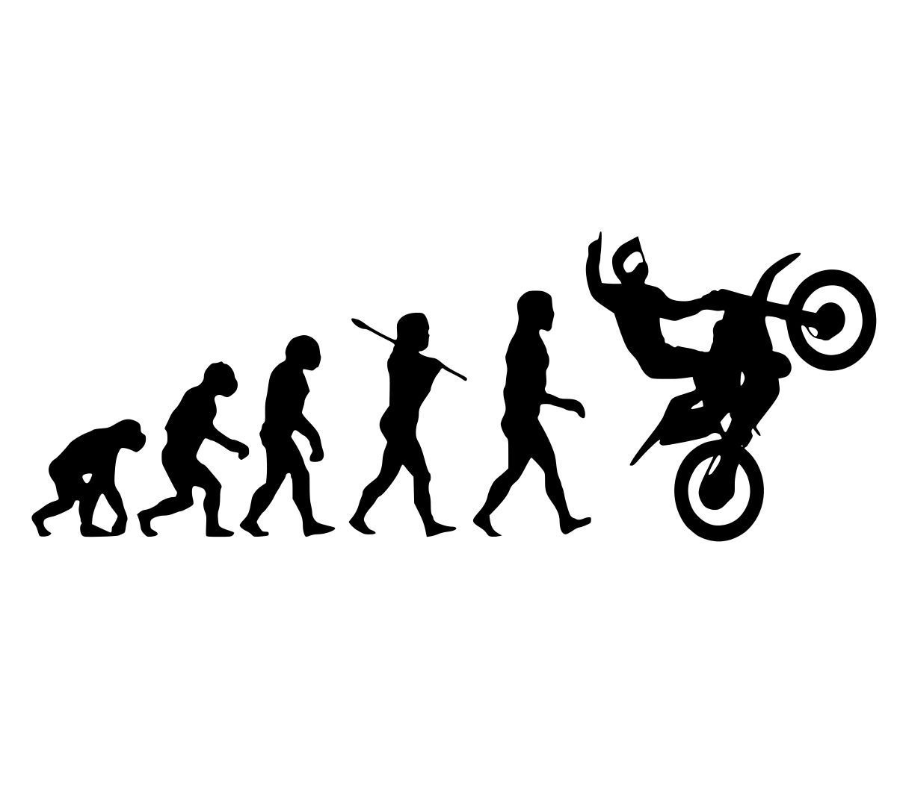

La historia de la motocicleta es ejemplo del progreso del hombre. En sus orígenes se consideraba que una “moto” no era otra cosa que una “bici” equipada con un motor algo que con el paso de los años cambió notablemente. En CurioSfera-Historia.com, te explicamos la historia de la motocicleta, quién la inventó y cómo ha sido su evolución.
Contamos con las mejores motos desde su creacion hasta el presente año 2023 y, Motos Fabricadas por diferentes marcas a nivel mundial, mostramos el cambio que han tenido las motos y llevan en su diseño unico adaptado por la epoca y modelo de cada una, con el ADN de carreras. Su potencia varía desde los 30 cc hasta los 1290 cc, es por ello que se han posicionado con fuerza en el mercado, como uno de los vehiculos o medios de transporte favoritas, ya que nos ayuda a llegar a los destinos de manera mas rapida y facil al momento de presentarse congestion vehicular.

El origen de la moto lo encontramos en otro fantástico invento del hombre: la bicicleta. La idea surge de poder desplazarse con ella si tener que realizar el esfuerzo de pedalear. El principal problema residía en que el único sistema de producir energía de forma autónoma y «móvil» que existía en aquella época, era el vapor. Un mecanismo bastante grande y aparatoso para instalarlo con efectividad en una bici.
Un domingo de abril de 1.818, fue presentada por primera vez en los Jardines de Luxemburgo de París una draisiana, es decir: una bicicleta provista de caldera de vapor, artefacto que su inventor llamó vélocipédraisiavaporiana. Poco más se sabe del artilugio en cuestión, del que sólo ha llegado a nosotros un dibujo.

Cuando ya podemos hablar de la existencia de la motocicleta con alguna propiedad. Se construyeron entonces tres modelos que más bien eran armatostes lentos que se averiaban continuamente. Veamos quién tiene el honor de ser considerado su inventor.
El inventor de la motocicleta es el estadounidense Sylvester Howard Roper (1823-1896), que en el año 1.867 inventó un motor de cilindros que funcionaba a vapor y lo incorporó a una bicicleta.
Sin duda alguna, esta es la que se puede considerar la primera motocicleta de la historia. Eso sí, siempre partiendo del concepto que era impulsada por un motor a vapor. Aunque es justo destacar, que entre los historiadores existen diferentes opiniones a la hora de atribuir la invención de la motocicleta, ya que se le adjudica a varias personas como podrás ver más abajo, en el apartado evolución de la moto: